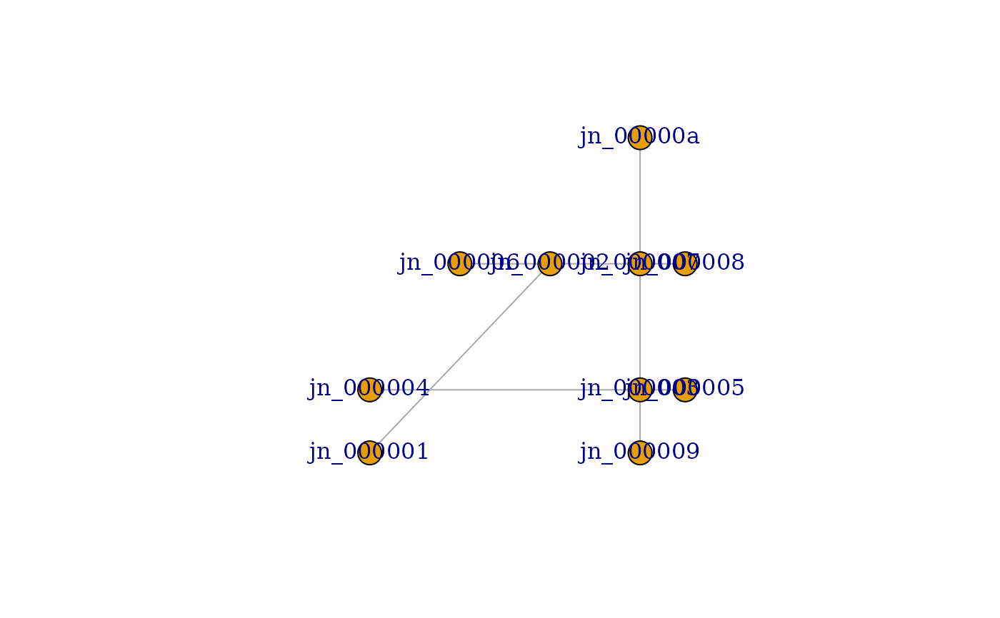

This function creates a graph object from a set of nodes and links.
Examples
# Create nodes and links
nodes <- extract_road_network_nodes(sample_roads)
links <- extract_road_network_links(sample_roads, nodes)
# Create the graph
graph <- create_graph(nodes, links)
graph
#> IGRAPH 41858e9 UNW- 10 10 --
#> + attr: name (v/c), x (v/n), y (v/n), name (e/c), x (e/n), y (e/n),
#> | weight (e/n)
#> + edges from 41858e9 (vertex names):
#> [1] jn_000001--jn_000002 jn_000003--jn_000005 jn_000003--jn_000004
#> [4] jn_000006--jn_000006 jn_000002--jn_000006 jn_000007--jn_000008
#> [7] jn_000002--jn_000007 jn_000007--jn_00000a jn_000003--jn_000009
#> [10] jn_000003--jn_000007
# Plot the graph
plot(graph)
